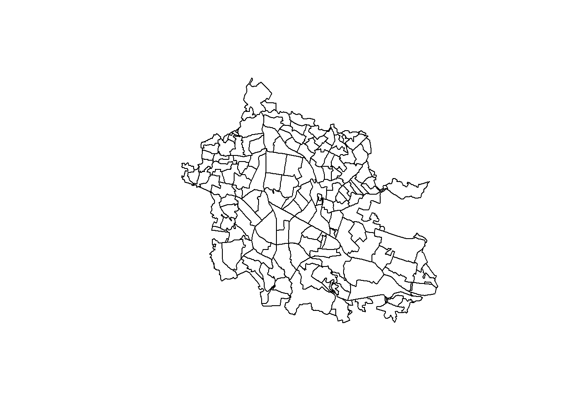
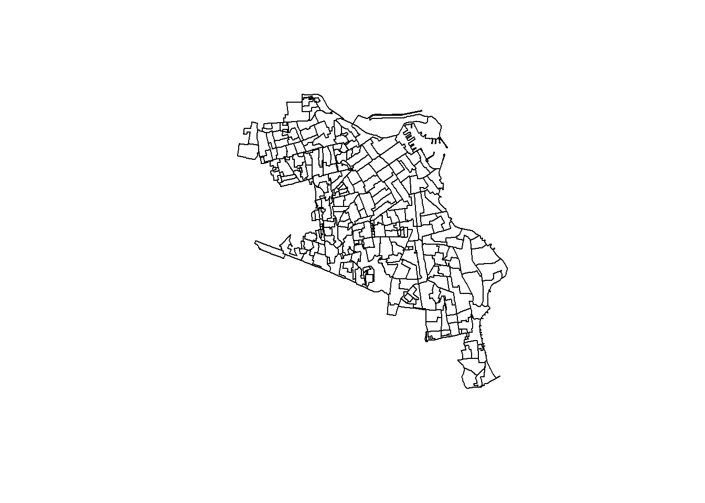
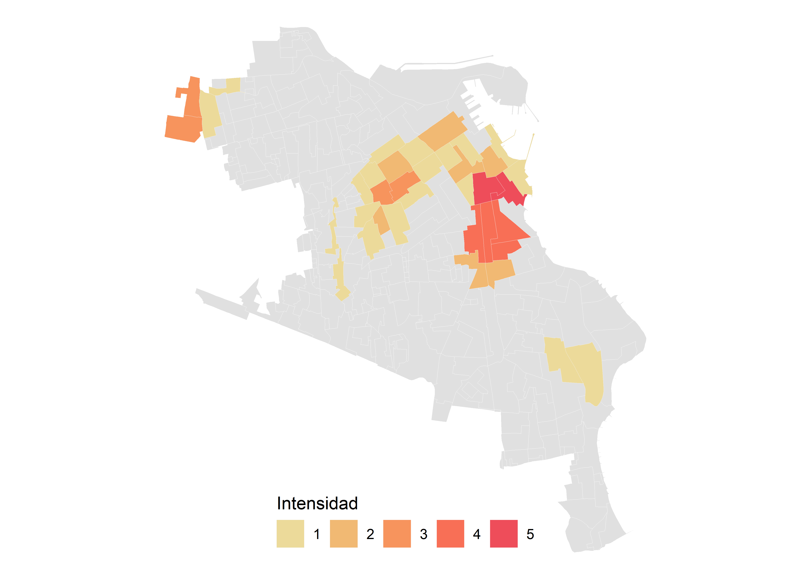

Capítulo 4 Hotspots en R
4.1 Bajar las bases de datos del SINAVE.
4.1.2 En la página del sinave buscar y darle click al boton Enfermedades Transmitidas por Vector.


4.1.3 Ingresar el nombre del usurio y contraseña.

4.1.4 Ingresar a la sección de Reportes.


4.1.5 Darle click a Descarga de Datos Vectores
4.1.6 Bajar la base de datos de la última fecha de la enfermedad de interés.
4.1.7 Guardar la base en la carpeta de interes.
4.1.8 Extraer el txt del archivo con extensión RAR.
4.2 Geocodificación de la base de datos de Dengue.
La geocodificación es el proceso de transformar las direcciones físicas de los domicilios a coordenadas geográficas (latitud y longitud). La geocodificación se realiza a través del servicio de Geocoding API de google y con la función ggmap::geocode del paquete ggmap. El proceso de geocodificación se realiza en cinco pasos, el primer paso es subir la base o las bases de datos de Dengue a RStudio y extraer la información del estado y municipio de interes de la semana pasada y la semana actual. Dado que la frecuencia de la geocodificación es semanal y las bases de dengue son bases de datos acumulados, se requiere extraer de la base de la actual semana los casos no geocodificados (casos nuevos, casos de la presente semana), finalmente el archivo se guarda con extensión csv. En el paso dos, el archivo csv se sube a RStudio, se crea un vector de direcciones con la columna IDE_CAL, NUM_EXT, IDE_COL, IDE_CP, DES_MPO_RES, y posteriormente se realiza una manipulación del texto (por ejemplo, se sustituye # por NUMERO). En el tercer paso se utiliza la función para denhotspots::geocoden realizar la geocodificación, en el cuarto paso se eliminan los duplicados y se guarda la información en un archivo con extensión RData, y en el quinto paso se realiza el control de calidad de la geocodificación.
4.2.1 Subir la base de datos de Dengue a 
4.2.1.1 Subir la base de datos de dengue de la semana actual.
Para subir a RStudio las bases de datos de dengue de la semana actual se realiza atraves de la función denhotspots::read_den_dataset. La función tiene dos objetivos, 1) subir la base de datos y 2) extraer los casos de dengue confirmados del municipio y del estado definido en los argumentos. La función read_den_dataset tiene tres argumentos: x para definir el directorio de la carpeta donde se guardó la base de datos de dengue que se bajó del SINAVE, des_edo_res para definir el estado de residencia de los casos y des_mpo_res para definir el municipio al cual pertenece la localidad de los casos que se desea analizar. La extración de casos de dengue a nivel de municipio obedece a que en muchas localidades o ciudades que han crecido en los últimos diez o más años, muchas de las localidades alrededor de ellas se han convertido en colonias de las periferia y se han fusionado al área urbana. Pero en las bases de datos de dengue aún se manejan como localidades y extraer solo los casos de dengue de la cabecera municipal, dejaría fuera todas colonias (localidades) que se han integrado en el area urbana de la cabecera municipal.
# codigo para subir la base de datos de la semana actual
library(magrittr)
y <- denhotspots::read_den_dataset(x = "C:/Users/felip/Dropbox/manual_hotspots_veracruz/1.Datasets/DENGUE2_.txt",
des_edo_res = "VERACRUZ",
des_mpo_res = "POZA RICA DE HIDALGO") 4.2.1.2 Subir la base de datos de dengue de la semana pasada
library(magrittr)
x <- denhotspots::read_den_dataset(x = "C:/Users/felip/Dropbox/manual_hotspots_veracruz/1.Datasets/DENGUE2_.txt",
des_edo_res = "VERACRUZ",
des_mpo_res = "POZA RICA DE HIDALGO")4.2.1.3 Ordenar la base por el ID del paciente y extraer los casos no geocodificados de la semana actual.
Este paso asegura que solo los casos que se agregaron la semana actual sean geocodificados, debido a que el orden de los casos cambian de manera que se suben los casos. Es decir que los casos nuevos no se agrégan después del último caso, sino en un orden desconocido para el programa de vectors. Esta es la razón por que se extraen solo los casos que no se geocodificaron la semana pasada a través del identificador único del paciente (VEC_ID).
z <- y %>%
dplyr::filter(!VEC_ID %in% c(x$VEC_ID)) %>%
dplyr::arrange(VEC_ID)4.2.1.4 Guardar el resultado
Por último se guarda la información en un archivo con extension *.csv y se nombra el archivo con un nombre intuitivo con minúsculas, gión bajo y con una fecha. Se recomienda realizar la geocodificación semanal para una localidad y el nombre del archivo se usara para la geocodificación
write.csv(z, file = "pos_poza_rica_2021_04_05.csv")4.2.1.5 head(), dim() y names()
Estos funciones tienen como objetivo explorar la base.
dim(y) # proporciona el número de columnas y filas de la base de datos.## [1] 2 27names(y) # Proporciona el nombre de las columnas.## [1] "VEC_ID" "IDE_EDA_ANO" "IDE_SEX"
## [4] "DES_CAL" "IDE_CAL" "NUM_EXT"
## [7] "NUM_INT" "IDE_COL" "IDE_CP"
## [10] "CVE_LOC_RES" "DES_LOC_RES" "CVE_MPO_RES"
## [13] "DES_MPO_RES" "DES_JUR_RES" "CVE_EDO_RES"
## [16] "DES_EDO_RES" "ESTATUS_CASO" "CVE_DIAG_PROBABLE"
## [19] "DES_DIAG_PROBABLE" "DES_DIAG_FINAL" "FEC_INI_SIGNOS_SINT"
## [22] "ANO" "SEM" "MANEJO"
## [25] "DES_INS_UNIDAD" "DENGUE_SER_TRIPLEX" "FEC_INGRESO"head(y) # proporciona los primero seis registro.## VEC_ID IDE_EDA_ANO IDE_SEX DES_CAL IDE_CAL NUM_EXT NUM_INT
## 1: 886120 9 2 CALLE MADVID 19
## 2: 889065 27 1 CALLE RIO CAZONES 110
## IDE_COL IDE_CP CVE_LOC_RES DES_LOC_RES
## 1: AGUSTÍN LARA Colonia 93270 1 POZA RICA DE HIDALGO
## 2: MIGUEL HIDALGO Fraccionamiento 93319 1 POZA RICA DE HIDALGO
## CVE_MPO_RES DES_MPO_RES DES_JUR_RES CVE_EDO_RES DES_EDO_RES
## 1: 131 POZA RICA DE HIDALGO POZA RICA 30 VERACRUZ
## 2: 131 POZA RICA DE HIDALGO POZA RICA 30 VERACRUZ
## ESTATUS_CASO CVE_DIAG_PROBABLE DES_DIAG_PROBABLE
## 1: 2 2 DENGUE CON SIGNOS DE ALARMA
## 2: 2 2 DENGUE CON SIGNOS DE ALARMA
## DES_DIAG_FINAL FEC_INI_SIGNOS_SINT ANO SEM MANEJO
## 1: DENGUE CON SIGNOS DE ALARMA 2021-01-24 2021 4 1
## 2: DENGUE CON SIGNOS DE ALARMA 2021-03-23 2021 12 1
## DES_INS_UNIDAD DENGUE_SER_TRIPLEX FEC_INGRESO
## 1: IMSS NA 2021-01-27
## 2: IMSS 2 2021-03-25Esta funcion nos proporciona o presenta la base.
DT::datatable(y)4.2.2 Subir el csv a y creamos el vector de direcciones
Para subir el csv creado en el paso 4.2.1 y crear el vector de direcciones de los domicilios de los casos de dengue con el objeto de geocodificarlos, se usa la funcion denhotspots::data_geocoden. La función data_geocoden tiene tres argumentos: infile hace referencia al nombre del archivo cvs que creo en el apartado previo (4.2.1.4 Guardar el resultado), data es un argumento lógico (TRUE o FALSE) para definir si la función te regresa la base de datos completa o solo el vector de direcciones (como solo se va geocodificar solo se usa el vector de direcciones y en este caso el valor del argumento es FALSE), y sinave_new es un valor logico para definir si la base del SINAVE es la reciente (nueva) o no. Esta dicotomía obedece a que después del 2015 (ingreso del Chikungunya (CHIKV) y Zika (ZIKV) en México), es decir el 2016, las bases de datos de dengue fueron modificadas para incluir más información de acuerdo a la situación epidemiologica provocada por el ZIKV y CHIKV.
addresses <- denhotspots::data_geocoden(infile = "pos_poza_rica_2021_04_05",
data = FALSE,
sinave_new = TRUE)4.2.3 Realizar la geocodificación
4.2.3.1 manipulación de texto
Los algoritmos de google y R para geocodificación funciona bien para las áreas urbanas, pero no para las áreas rurales, debido a que en las áreas rurales la forma de definir las direcciones no son homogeneas y a menudo define la direccion del domicilio con referencias como a lado de la tienda Diconsa, o a lado del taller mecánico x, o domicilio conocido. Estas formas de referencias funcionan perfectamente localmente, pero para las computadoras y los códigos no han sido adiestrados para saber como intepretar y regresar las coordenadas geográficas. En la ciudades tambien ocurren detalles que no permiten regresar las coordenas geográficas, aunque en menor frecuencia y por otras causas distintas que en la áreas rurales. En las áreas urbanas es comón que el número de la casa le antepongan el gato # y el gato y todos lo que se sigue es ignorado por R y causa error y no se logra el objetivo que es geocodificar la direccion.
Para resolver este problema se tiene que manipular el texto (las direcciones son texto (“string”). Esto se logra a través de dos pasos una vez identificado el problema. El primero es definir si el error es solo de una dirección o de muchas y el segundo paso es resolver el problema sustituyendo o eliminando el caracter indentificado que causo el error.
Una ves interrumpida la geocodificación por el error se usa la función stringr::str_subset, la cual tiene dos argumentos: string y pattern. En el primer argumento se pone el vector de direcciones (addresses) que estamos geocodificando y en el segundo argumento el valor es el caracter que causo la interrupción del problema. La función te regresa un vector con uno o mas elementos donde el mismo caracter causaría problema de no resolverse y continuamente la geocodificación se interrumpirá
# 1)
stringr::str_subset(string = addresses,
pattern = "#") # NA, "Domicilio Conocido"## character(0)#stringr::str_subset(addresses, pattern = "#|Domicilio Conocido") Definido si el patrón del problema es único o se repite en varias direcciones que estamos geocodificando, usamos la función stringr::str_replace_all o realizamos el cambio directamente solo en la dirección que causo el problema.
La función str_replace_all tiene tres argumentos: string, pattern y replacement. En el argumento string el valor es el vector de direcciones que estamos geocodificando, en el argumento pattern el valor es el caracter que causo el problema y en el argumento replacement se pone el caracter que va remplazar al caracter que causo la interrupción en la geocodificación (en el ejemplo solo espacio blanco sustituye al gato #).
# 2.1)
addresses <- stringr::str_replace_all(string = addresses,
pattern = " #",
replacement = " ")Tambien tenemo la opción de reemplazar el error directamente.
# 2.2)
# supon que la dirección donde se interrumpio fue
#addresses[100]
#"Domicilio conocido, San Luis La Loma, Tecpan, Guerrero,Mexico"
# identificamos que el problema fue "Domicilio conocido"
# Así que sustituimos directamente con el siguiente código
#addresses[100] <- "San Luis La Loma, Tecpan, Guerrero,Mexico"
# y la geocodificación continua hasta el final si no encuentra errores4.2.3.2 Geocodificación.
La geocodificación se realiza con la función denhotspots::geocoden traves de la función geocode del paquete ggmap. La función geocoden solo tiene el argumento infile que es el nombre del archivo csv que se generó en el apartado 2.1. en este caso el valor es “pos_poza_rica_2021_04_05”. La función tiene cuidado en guardar en un archivo temporal, el resultado después de que cada dirección sea geocodificada, al final guarda en nuestro directorio de trabajo un archivo con extensión rds con el mismo nombre que asignado al argumento infile. El resultado es una base de datos con las coordenadas geográficas.
library(ggmap)
denhotspots::geocoden(infile = "pos_poza_rica_2021_04_05")## [1] "Working on index 1 of 1"
## [1] "OK"4.2.4 Guardar la información en RData
El resultado de la geocodificación es una base de datos con las coordenadas geográficas sin las columnas de interes como año, semana, serotipo etc. Por esta razón se debe subir la base de casos geocodificados y la base de casos original para unir ambas bases y tengamos una base de datos completa y geocodificada. El procedimiento se realiza en tres pasos, primero se sube la base de datos geocodificada, acto seguido se sube la base de datos de dengue y tercero se eliminan los duplicados en la base geocodificada. Al final Ambas bases se unen y se guardan
4.2.4.1 Subir la base geocodificada
Para subir la base de geocodificada a través de la función readRDS::base, se pone en el argumento file la dirección donde se guardo el archivo con extensión *rds de la base geocodificada.
z <- readRDS("C:/Users/felip/Dropbox/r_developments/r_bookdowns/manual_hotspots/pos_poza_rica_2021_04_05_temp_geocoded.rds")4.2.4.2 Subir la base de casos
Para subir la base de los casos se utiliza la funcion denhotspots::data_geocoden como se uso para subir el vector de direcciones (ver en el 2.3 la descripción de la función), solo que en este caso el valor del argumento data cambia a TRUE (por que queremos subir los datos y no las direcciones). Los dos argumento (infile y sinave_new) permanecen iguales..
# 2. Subir la base de datos de dengue
data <- denhotspots::data_geocoden(infile = "pos_poza_rica_2021_04_05",
data = TRUE,
sinave_new = TRUE)4.2.4.3 Eliminar duplicados y guardar
Una vez, subidas las bases de los casos geocodificados y la base de dengue original en el ambiente de trabajo, se eliminan los duplicados en la base geocodificada, se unen ambas bases y se guardan en un directorio específico. Para realizar este último paso se ocupa la función denhotspots::save_geocoden, la cual tiene cuatro argumentos: x es la base de datos geocodificada, y es la base de datos original de dengue, directory es la carpeta donde se va guardar el archivo con extensión R.Data & loc es el nombre del archivo con el que se va guardar (es el mismo nombre que uso el valor del argumento infile).
denhotspots::save_geocoden(x = z,
y = data,
directory = "RData_geocoded",
loc = "pos_poza_rica_2021_04_05")Hasta este punto las base de los casos de dengue esta geocodificada y esta lista para usarse para hacer la visualización a traves de mapas o cualquier análisis espacial que se desee implementar en el programa de dengue.
4.3 Bajar los shapefile del INEGI.
La resolución de la información cartográfica que se requiere para realizar el analisis de los hotspots a nivel de ciudad es el AGEB (Área Geoestadística Básica) y esta disponible en la página oficial del inegi en la siguiente dirección https://www.inegi.org.mx/app/biblioteca/ficha.html?upc=889463807469 con el nombre de Marco Geoestadístico (MG) Censo de Población y Vivienda 2020. La misma información cartográfica esta disponible en R en un paquete llamado rgeomex alojado en la página de github (https://github.com/fdzul/rgeomex). El paquete se instala en tecleando en la consola de R o Rstudio lo siguiente:
#devtools::install_github("fdzul/rgeomex")ó
#remotes::install_github("fdzul/rgeomex")library(sf)## Linking to GEOS 3.9.0, GDAL 3.2.1, PROJ 7.2.1library(magrittr)
xal <- rgeomex::extract_ageb(locality = "Xalapa de Enriquez",
cve_geo = "30")## although coordinates are longitude/latitude, st_intersects assumes that they are planarplot(sf::st_geometry(xal$ageb)) 
library(sf)
ver <- rgeomex::extract_ageb(locality = c("Veracruz", "Boca del Río"), cve_geo = "30")## although coordinates are longitude/latitude, st_intersects assumes that they are planarplot(sf::st_geometry(ver$ageb)) 
4.4 Contar el número de casos por AGEB (agregación espacial).
La base de datos geocodificada es convertida a un objeto sf y a una base de patrón de puntos espaciales. Entonces, se cuentan cuantos casos existen por cada unidad espacial, en este caso AGEB (pero puede ser por manzana, colonia, sector etc). El proceso de agregación se realiza en tres pasos, primero se sube la base (o las bases), segundo se sube la información cartografica (paso anterior) y tercero se realiza la agregación espacial. El conteo de los casos por AGEB es realizado por la función denhotspots::point_to_polygon del paquete denhotspots. La función cuenta con siete argumentos:
| Argumento | Definición |
|---|---|
| x | es la base de datos de dengue geocodificada |
| y | es la base de datos de AGEBs |
| ids | son todas las columnas excepto geometry |
| time | es la resolución temporal de la base de datos de dengue |
| coords | son las coordenadas de la base de dengue |
| crs | es el sistema de referencia de las coordenadas |
| dis | es el prefijo la enfermedad |
4.4.1 subir la base datos geocodificada.
load("C:/Users/felip/OneDrive/proyects/priority_research_projects/hotspots_high_risk_localities_138/8.RData/geocoded_dataset.RData")4.4.2 subir los AGEBs.
library(magrittr)
library(sf)
ver <- rgeomex::extract_ageb(locality = c("Veracruz",
"Boca del Río"),
cve_geo = "30")## although coordinates are longitude/latitude, st_intersects assumes that they are planar4.4.3 Realizar la agregación espacial.
ver_casos <- denhotspots::point_to_polygons(x = y,
y = ver$ageb,
ids = c(names(ver$ageb)[1:(ncol(ver$ageb)-1)]),
time = ANO,
coords = c("long", "lat"),
crs = 4326,
dis = "DENV")## although coordinates are longitude/latitude, st_contains assumes that they are planar
## although coordinates are longitude/latitude, st_contains assumes that they are planar
## although coordinates are longitude/latitude, st_contains assumes that they are planar
## although coordinates are longitude/latitude, st_contains assumes that they are planar
## although coordinates are longitude/latitude, st_contains assumes that they are planar
## although coordinates are longitude/latitude, st_contains assumes that they are planar
## although coordinates are longitude/latitude, st_contains assumes that they are planar
## although coordinates are longitude/latitude, st_contains assumes that they are planar
## although coordinates are longitude/latitude, st_contains assumes that they are planar
## although coordinates are longitude/latitude, st_contains assumes that they are planar
## although coordinates are longitude/latitude, st_contains assumes that they are planar
## although coordinates are longitude/latitude, st_contains assumes that they are planar
## although coordinates are longitude/latitude, st_contains assumes that they are planar4.5 Pasos 6-10. Cálcular el Z-score de los casos a Calcular los hotspots.
Los pasos seis (Z-score) a diéz (calcular los hotspots) son realizados por la función denhotspots::gihi del paquete denhotspots. La función tiene seis argumentos
| Argumento | Definición |
|---|---|
| x | es la base de datos del AGEB con los casos de dengue |
| gi_hi | define el estadístico espacial local. \(G_{i}^{*}\), \(H_{i}^{*}\) ó ambos |
| id | son todas las columnas de excepto geometry |
| time | es la resolución temporal de la base de datos de dengue |
| dis | es el prefijo la enfermedad |
| alpha | es el nivel de significancia. La probabilidad de rechazar la hipótesis nula cuando es verdadera |
hotspots <- denhotspots::gihi(x = ver_casos,
id = names(ver_casos)[c(1:9)],
time = "year",
dis = "DENV",
gi_hi = "gi",
alpha = 0.95)4.6 Visualizar los hotspots.
La visualización del número de veces que cada AGEB fue hotspots (intensidad) se realiza a través de la función denhotspots::staticmap_intensity. Esta función cuenta con nueve argumentos.
| Argumento | Definición |
|---|---|
| x | es base de datos de los hotspots |
| pal | es la paleta de colores |
| option | es la opción para algunos paquetes (viridis) |
| name | es el nombre de la paleta de colores |
| pal_name | es valor lógico para indicar si es name o option la paleta |
| breaks | es la división de la legenda |
| dir_pal | es la dirección de la peleta |
| x_leg | es la posición x de la legenda. Valores 0-1 |
| y_leg | es la posición y de la legenda. Valores 0-1 |
| ageb | es un valor lógico para indicar si el mapa es por AGEB |
| Note: | |
| Los paquetes de colores nombran sus paletas como option o name |
denhotspots::staticmap_intensity(x = hotspots,
pal = rcartocolor::carto_pal,
pal_name = TRUE,
name = "OrYel",
breaks = 1,
dir_pal = -1,
x_leg = 0.5,
y_leg = 0.1,
ageb = TRUE)